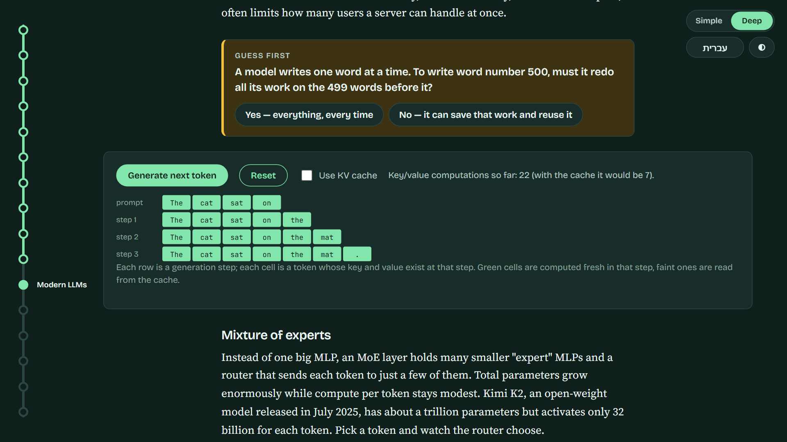

THE RESIDUAL STREAM · EP 09
What changed since 2017
Same recipe, tuned almost everywhere
THE 2017 RECIPE, STILL UNDERNEATH TUNED SINCE
tokens→embeddings→attention + MLP blocks→next token
FIVE IDEAS THAT MATTER WHEN YOU BUILD ON LLMs
KV cache
Mixture of experts
Long context
Reasoning
RAG, tools & agents
The KV cache: remember, don't redo

Never change
REAL DEMO
WITHOUT THE CACHE
0key/value computationseverything recomputed at every step
WITH THE CACHE
0key/value computationsone new token per step
Prompt caching: the same idea, for long prompts you send again
The catch: the cache fills GPU memory, which often limits users per server
Mixture of experts
REAL DEMO · ILLUSTRATIVE ROUTING
KIMI K2 · OPEN-WEIGHT MODEL · JULY 2025
32 billion active per token
Longer context, longer thinking
CONTEXT WINDOW, ROUGHLY TO SCALE
MADE POSSIBLE BY
RoPE scaling
FlashAttention
Grouped-query attention
Hybrid designs
A LONG WINDOW IS NOT THE SAME AS USING IT WELL
Illustrative: details in the middle get missed
2022 · CHAIN-OF-THOUGHT
Illustrative example
REASONING MODELS
Trained with RL to think at length before answering
“THINKING BUDGET” · A PRODUCT SETTING
Look it up, use tools, loop
RAG
Fresh, relevant documents go into the context. Training knowledge stays frozen.
Tools
The model writes a structured call. Your code runs it. The result comes back as tokens.
Agents
The same loop, one level up: think, call, read, decide again.
↺ and around again, until the task is done
Coming up: EP 11 · Agents
The Residual Stream
Modern LLMs chapter · step through the KV cache, route a token
https://danielarosenn.github.io/residual-stream/
THE KV CACHE
MIXTURE OF EXPERTS
Our own words and pictures; any mistakes are ours.